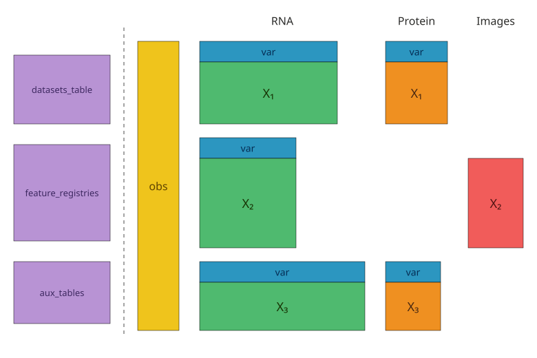
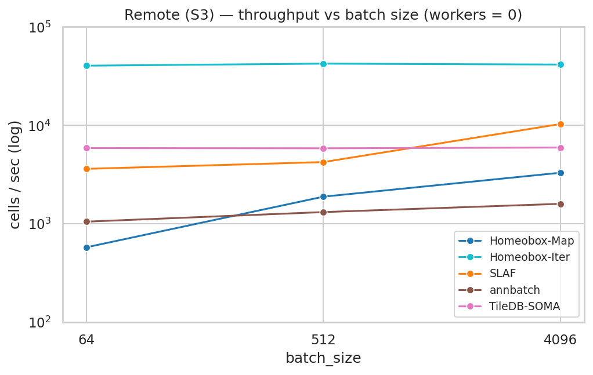

Homeobox
Homeobox is a database for multimodal biomedical atlases that do not fit cleanly into one matrix, one modality, or one shared feature space.
A single Homeobox atlas can hold sparse single-cell gene expression, dense protein and embedding features, 2D/3D/4D/5D images, biomolecular structures, free text, and auxiliary metadata tables. You can query it, snapshot it, reconstruct results as AnnData / MuData, and stream batches to PyTorch without creating separate ML-only copies.
Under the hood, Homeobox combines the search and versioning capabilities of LanceDB with the array storage of Zarr.
Why Homeobox

How it compares to existing tools
| If your main problem is... | You probably want... |
|---|---|
| Querying, versioning, reconstructing, and training from many heterogeneous biomedical datasets with different feature spaces | Homeobox |
| Dissatisfaction with TileDB ML-support and developer experience | Homeobox |
| Analyzing one clean matrix or a small number of aligned modalities | AnnData / MuData directly |
| Metadata, vector, or text search without large array payloads | LanceDB, a vector database, or a regular database |
Motivating cases
- Hundreds or thousands of
h5adorh5mufiles from different assays, panels, and organisms that you want to query and train on as a single collection. - Repositories of large images stored in Zarr / OME-Zarr, DICOM, or TIFF — 2D, 3D, or 4D, sometimes >1 TB each, with associated text descriptions.
- Single-cell images, masks, and associated feature data (e.g. CellProfiler vectors).
- Any combination of the above, in one queryable store.
Existing tools tend to optimise for single large datasets from a single modality, often through a laborious standardisation step that drops or duplicates data to fit a rectangular schema. Homeobox's RaggedAtlas unifies heterogeneous data into a single store that supports SQL / vector / full-text search, interactive AnnData / MuData reconstruction, and ML streaming.
Ragged feature spaces, unified obs
Real-world atlases pull together datasets that were not designed to be compatible: different feature panels, different assays and imaging modalities, different metadata fields. Conventional tools handle this by padding to a union matrix (wasteful) or intersecting to shared features (lossy).
A RaggedAtlas keeps a single shared obs table while letting each dataset retain its own feature axis (or no features at all, for raw images). The obs table lives in LanceDB; each dataset occupies its own Zarr group with its own feature ordering; every row carries a pointer into its group.
At query time, the reconstruction layer joins the feature spaces on the fly: it computes the union or intersection of global feature indices, scatters each group's data into the right columns, and returns a single AnnData / MuData with every row correctly placed. Nothing is dropped at ingest, and there is no ambiguity about whether a value is a true zero or padding.
The same shape scales to any number of modalities — one pointer column per feature space on a single obs schema — so a query against a multimodal atlas streams within-row multimodal batches through a single DataLoader, regardless of how many modalities each cell has.
Installation
Prebuilt wheels are available on PyPI. Requires Python 3.12 or newer.
pip install homeobox # core: atlas, querying, ingestion
pip install homeobox[ml] # + PyTorch dataloader
pip install homeobox[io] # + S3/GCS/Azure
pip install homeobox[viz] # + marimo, matplotlib
pip install homeobox[all] # everything
To build from source (requires a Rust toolchain):
curl -LsSf https://astral.sh/uv/install.sh | sh
curl --proto '=https' --tlsv1.2 -sSf https://sh.rustup.rs | sh
uv sync
uv run maturin develop --release
Where to start
These pages, read in order, are the shortest path from "what is a homeobox atlas" to "I am training a model on one":
- Building an Atlas — end-to-end walkthrough: define schemas, ingest two datasets with different feature panels, snapshot, and run union/intersection queries against the result.
- Schemas — the LanceDB schema classes you subclass for your atlas:
HoxBaseSchema,FeatureBaseSchema, the pointer types (SparseZarrPointer,DenseZarrPointer,DiscreteSpatialPointer), and howPointerField.declarebinds a column to a feature space. - Querying — the
AtlasQueryfluent builder: SQL filters, vector search, feature-filtered queries, union/intersection joins, and the terminal methods (.to_anndata(),.to_mudata(),.to_batches()). - PyTorch Data Loading —
UnimodalHoxDatasetandMultimodalHoxDataset, the map-vs-iterable trade-off, andmake_loaderwith spawn-based worker parallelism for training-scale throughput.
The rest of the Reference nav — Feature Layouts, Array Storage, BatchArray, Reconstructors — is best read when you need to extend homeobox to a new modality or understand the I/O path.
Example notebook
| Notebook | Description |
|---|---|
explore_perturbation_atlas_colab.py (Colab) |
Explore an atlas with 120M+ cells, over 130,000 genetic, chemical, and biologic perturbations, and 5 modalities. |
Performance
Homeobox is intended to be the source of truth for analysis and model training, not just a staging format. The same snapshot you query can feed a PyTorch training loop.
Beyond raw numbers, the case for Homeobox is generality and integration. One library handles cell tables, sparse matrices, dense features, images, embeddings, and text — there is no separate stack for non-tabular modalities. New modalities are added by writing a feature-space spec, not by waiting for upstream support. And because storage is plain LanceDB + Zarr, Homeobox plays directly with the broader Python + Rust data ecosystem (Lance, DuckDB, Polars, zarrs).
On a 1M-cell × 20k-gene synthetic atlas, the homeobox iterable dataloader sustains ~70k cells/sec on local NVMe and ~40k cells/sec streaming from S3 at a single worker — saturating local disk and running roughly an order of magnitude faster than the next remote-capable system in the sweep.

See dataloader_benchmark.md for the full sweep across nine dataloaders (SLAF, scDataset, BioNeMo SCDL, annbatch, TileDB-SOMA, cell-load, and the two homeobox surfaces), including local/remote/perturbation workloads, memory profiles, and reproducible scripts.
Versioning
Homeobox separates the writable ingest path from the read/query path with an explicit snapshot model: ingest writes Zarr arrays and cell records freely (in parallel if needed), optimize() compacts Lance fragments and rebuilds indexes, snapshot() validates consistency and records the current Lance table versions, and checkout(version) opens a read-only atlas pinned to that snapshot. Queries and training runs execute against a frozen, reproducible view; concurrent ingestion does not affect any checked-out handle.